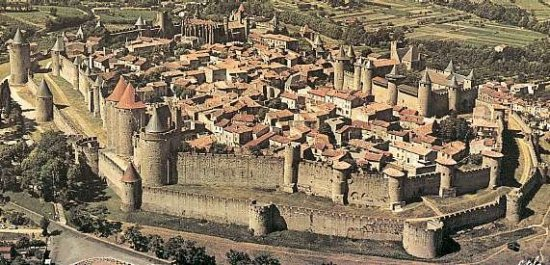

| CARCASSONNE
|
|||
|

|
|||
|
Los primeros asentamientos datan del siglo VI a.e.c.,
como así lo demuestran las excavaciones arqueológicas
en las que han aparecido restos de cabañas construidas por los Iberos. Los
Iberos fueron desplazados hacia el 300 a.e.c. por los Volcae-Tectosages,
una tribu de origen centroeuropeo. A partir del s III a.e.c aparecieron
cerámicas de estilo campaniense, cada vez más abundantes a medida que
aumentaba el comercio con el nuevo Imperio, sobre todo destacaba el
comercio del vino. También han aparecido numerosos fragmentos cerámicos
etruscos, púnicos y griegos que parecen demostrar la importancia del
oppidum de Carcaso en la Vía de Aquitania. Restos Galo-Romanos
En el 333, en el itinerario de un peregrinaje de Burdeos a Jerusalén, se menciona el Castellum de Carcasona, en una lista de etapas que comprendía albergues, postas, burgos, ...etc. Las primeras murallas son de origen romano. Las torres y las murallas se construyeron evitando las líneas rectas, en un intento de reducir la efectividad de un ataque con arietes. La situación estratégica en que se ubica la ciudad la convirtió en un importante objetivo. Como consecuencia las fortificaciones de la plaza sufrieron continuas ampliaciones y mejoras para adaptarse a la evolución de las técnicas de guerra. En el año 350 la ciudad fue tomada por los francos, aunque los romanos la recuperaron enseguida y reforzaron sus defensas. Sin embargo no fue suficiente para evitar que la ciudad cayera en manos de los visigodos en 436, durante el reinado de Teodorico.
|